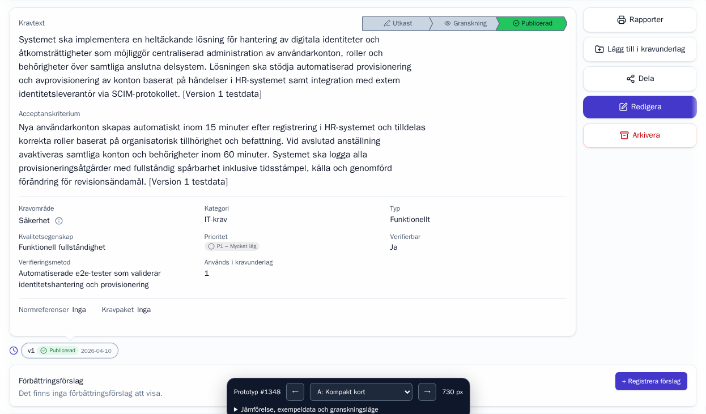
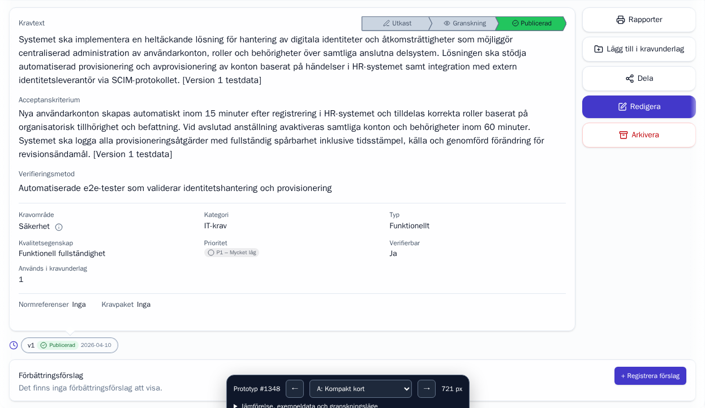

Throwaway prototype · #1348 · A preferred · refinement ready for review
Refined A: compact process steps and area information
A is the preferred direction. Its original-style arrows now sit beside Requirement text (24 px high, 6 px arrow depth). Click the area info icon to read its description and owner. The short ANV0002 example is now 577 px high with verification method as a separate text section.
Compare the real current layout with three alternatives, surrounded by the real requirements list and navigation. All variants keep the primary text before metadata, preserve the existing controls and show empty sections explicitly.
The live prototype is already running in the prepared workspace. To restart it:
npm --prefix /mnt/krav-azure-dev-data/.worktrees/issue-1348-prototype run prototype:1348
Local Keycloak sign-in: ada.admin / devpass. The launcher uses port 3001 and the existing local database and identity provider. Forward ports 3001 and 8080 for a remote workspace. The screenshots below also work offline.
Before / after
Drag the divider. Left is the current layout; right is your selected alternative. Both screenshots use ANV0002 v1 with its actual short text, forced empty sections, Swedish, light theme, collapsed navigation and the same scroll position.
Current layoutA — Compact card
Open baseline at original size · Open alternative at original size
Measured height
These are expanded-detail heights, not the whole page. The floating bar can measure your own data and remember a baseline for a matched comparison.
| Layout | Detail height | Space saved | Card / suggestions |
|---|
Measurement data · Browser verification results · A refinement checks
All changes and how to inspect them
Use the live comparison to work through this checklist. Checkmarks stay only in this open page. Exact viewport measurements are automated evidence; these review steps help you choose a design.
Switch baseline, A, B and C using the floating bar. A groups metadata in a card, B uses flowing inline pairs, C aligns document rows.
Use ANV0002 with actual text and empty sample sections at 1440 × 900 and 1920 × 1080. Remember the baseline height, then switch variants.
Requirement text comes first, acceptance criteria second. In A, verification method follows as a third full-width text section, then metadata. A/B/C use larger primary text. Choose long sample text and inspect wrapping without truncation.
Check area, category, type, quality characteristic, priority, verifiable, verification method and specification count against the baseline. In A, click the info icon beside the area name to see its description and owner. Use Enter to open, Escape or a click outside to close.
Switch Sections between Empty sample and Populated sample. Labels and empty information remain. Hover the sample package for its purpose/scope tooltip.
Compare the empty suggestion section, its title, empty information and registration button. Populate it to inspect the existing suggestion display and controls.
A has ordinary-style arrows beside Requirement text: 24 px high with 6 px arrow depth, original colors and icons. Baseline uses 40 px arrows with 14 px depth; B/C retain 30 px flat steps. On narrow cards, A wraps the steps below the heading.
Tab through the existing action rail and version history. Open the suggestion dialog and navigate it with Tab and Shift+Tab.
Enter a sample suggestion and press Save. Expect the prototype message explaining that no data changed. The save is intercepted before the network; success is not simulated.
Remember a baseline, switch variant and inspect the height difference. Arrow keys wrap around variants, but leave inputs, selects and dialogs alone. The URL records the variant.
Use the real app theme/navigation controls. Try the 760 px split-width simulation and long populated content. This simulation does not validate the real specification split workspace.
Use the English standalone link below. Inspect the same alternatives at full width and a narrow viewport.
Enable the existing Developer Mode control. Inspect markers for the switcher, text sections, metadata and reference chips. Their labels stay English.
Expand the inspection state to see variant, samples, width mode, viewport, requirement/version, theme, navigation width, measured heights and status steps. This is a throwaway branch; A is preferred and this refinement is ready for review.
SÄK0010: full-width text beneath the process steps
A now removes the inherited 75ch text-width limit. Requirement text, acceptance criteria and verification method fill the card, including below the process steps. Verification method follows acceptance criteria with the same styling and appears only once. Open SÄK0010 and compare at 1440 and 1920 px. Before measurements · After measurements · Verification method checks · Width stress checks.

Before: reconstructed preceding A layout, text limited to 720 px
After: text uses the full card widthAdditional visual checks
These captures exercise longer content, populated sections, dark theme, expanded navigation, simulated split width and English standalone details. Click an image to see its original size.
What this prototype establishes
The alternatives reduce the short example's footprint and make their layout tradeoffs visible. A is the preferred direction. Review its compact ordinary arrows and area information panel; the final implementation should then receive the issue's production tests and documentation.
Read-only previews use real data. Prototype sample content and height comparisons stay in memory. Non-authentication writes through the app's apiFetch helper return a local prototype message before the network; this is not a server security boundary. Existing app theme and navigation preferences retain their usual behavior. The 760 px width mode is a simulation, and does not certify the real specification split workspace, every role, lifecycle transitions or full accessibility compliance.
Source: throwaway branch prototype/issue-1348, based on fix/issue-1347 at 2d9ad75f. Full launch instructions, scope and code map are in the prototype README beside its source.